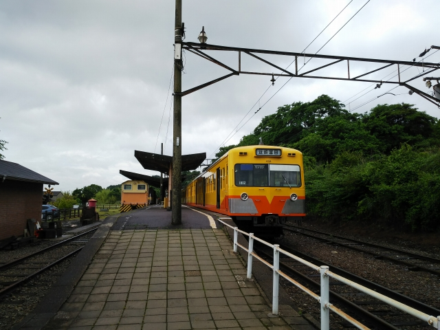
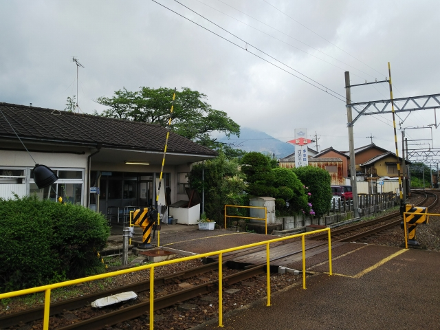

2020（R2）6月12日 近鉄完乗！
相変わらず金券ショップに並ぶ株主優待券がお安いので、近鉄の未乗路線の制覇に向かいました。
やってきたのは近鉄富田駅。端っこのホームに、元
西武の三岐鉄道の車輛が停まってます。。
乗ったことはあるんやけど、まずは久々にこの鉄道
に乗ってみることにします。
保々駅到着。ここに車庫があります。
実はここの頭のかたい若い駅員と一悶着ありまして
・・・
富田で一日乗車券買いたかったのに、駅員おらんか
らこの駅で買ったら、「富田からここまでの乗車券
が必要です」って。何ぬかしとんねん。
やさしく諭してあげました。
いろいろ停まってます。貨物主力の鉄道なので、電
機機関車の姿も見えます。
駅に戻って先を目指します。対向車はレトロ塗装で
した。こっちのほうが良くない？
終点の西藤原駅到着。
使ってない線路に保存の機関車が停まってました。

そのまま引返します。

富田までは戻らず、途中の伊勢治田駅で降ります。
「いせはった」と読みます。
側線が広がっていて、貨物鉄道の雰囲気が出てます。
駅前でバス待ち。どこに向かうって？北勢線の阿下
喜駅が実はここから近いんすよ。
阿下喜駅到着。
保存車両もおりますね。
駅前のコンビニで昼を調達して、駅前のベンチでか
きこみました。
ここから西桑名駅を目指します。
保存車両は、まだ改修中やね。
ナローの線路！
車庫見物のために、途中の東員駅で下車します。
車庫は駅から少し歩きます。
奥に、三重交通時代の塗装の車輛がおりました。
東員駅に戻って、終着の西桑名駅に到着。
ナローやけど、自動改札っす。
桑名からは近鉄に乗って富田に戻ります。
富田は、近鉄、ＪＲ、三岐と３つの路線が複雑に配
線されてる街です。
近鉄富田から、ＪＲ富田まで歩いて、ＪＲで四日市
に向かいます。
しかし、ＪＲ富田、無人は当然として、券売機まで
なかったわ・・・。ＪＲ四国のローカル駅でもある
っちゅうのに。
お前ら、新幹線でもうけとるんとちゃうのか？リニ
ア作る余裕があるんやったら、足元の鉄道も大事に
せぇよ・・・
ワンマン列車やから、バスと同じで降りる時払ろた
らええがなっちゅう発想やろけど。
四日市に到着し、歩いて近鉄四日市へ。
時間があるので、今は四日市あすなろう鉄道と名を
変えた、旧近鉄のナロー２路線の分岐駅の日永へ。
いい感じの駅です。
四日市に帰着。
日永からの帰りは、シースルー車両に乗りましたよ！
床の一部に透明なアクリル板をはめて、車軸が回る
ところが見れると言うしろもの。
なかなかおもろい発想なんやけど、さすがに狭いナ
ローの車輛でそれを撮影する勇気はありまへんでし
た・・・
実は昭和３１年まで、近鉄はＵ字型の路線で、国鉄
四日市の駅前まで大回りしてたんですねぇ。
そして近鉄完乗へ。最後の路線は湯の山線でした～。
無事、湯の山駅に到着。
この路線、ナローやったのを昭和３９年に一気に標
準軌に改軌したんよねぇ。それまで、今のあすなろ
う線と直通運転してたのが、急に大阪から直通の特
急の走る観光路線に変身しました。
観光客、全くおりまへん。
温泉街は、駅から離れてるんよね。
一番近い日帰りの温泉まで歩いて行ったけど、定休
日やったり、観光客おらんから休業してたりで、結
局温泉には入れず・・・
地図を見た時は気づかんかったけど、駅からずっと
登り勾配で、バスに乗って温泉街に行っとけばと後
悔しました。
実はここ湯の山温泉は、男はつらいよ第３作 フー
テンの寅 の舞台です。
しかし残念ながら、映画では湯の山駅は映ってない
みたいです。
息子からは、ＪＲも近鉄も完乗したんやから、日本
３位の私鉄も完乗したら？って言われたけど、東武
なぁ。関東私鉄は乗入とか、端の方が複雑やったり
とか、ハードル高いからなぁ・・・